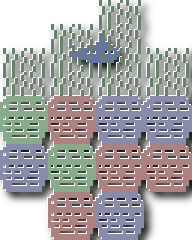
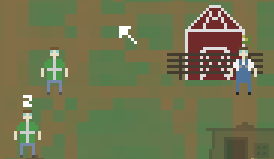

Games
Here's a list of all the games I've made, or am working on making, a thumbnail to show what they look like, their download links (or link to play them, in the case of web games), and their percent complete.
| Screenshot | Name | Description | Percent Complete | Released | Download | Source? |
|---|---|---|---|---|---|---|
 |
Caveman | A not-game with a real-time day/night and seasonal system. You need to re-light your fire. Made for MiniLD #37. | Done. | September 25, 2012 | Here! | Included. |
|  | These Tranquil Waters Shall Not Hold | A relaxing adventure through the deep sea in a blue submarine. Made for GMCJam #6. | Done. | April 30, 2012 | Here! | Yes! |
|  | Interstellar Planet-Ship Adventures: The Search for… $@#% Aliens!!!!!! | An experimental strategy/arcade hybrid made for Ludum Dare 23. Be sure to read the how-to before playing! | Done, but buggy. | April 23, 2012 | Here! | Included |
 |
Rabbiteers | My first foray into procedural generation. Find all the eggs and bring them back in time for easter! | Done. | April 9, 2012 | Here! | Yes! |
| Older Games | |||||
|---|---|---|---|---|---|
| Screenshot | Name | Description | Percent Complete | Download | Source? |
 |
The Being Santa Holiday Games Pack | A holiday pack of random, ridiculous games about being Santa. | Finished! | Play here! Or download here! |
No |
 |
The World Isn't...AA! | An arcade game about the Mayans being taken over before they could finish their calendar. Run from the invaders! | Finished! | Play here! High Scores! |
Soon |
Copyright Matt Chelen 2012